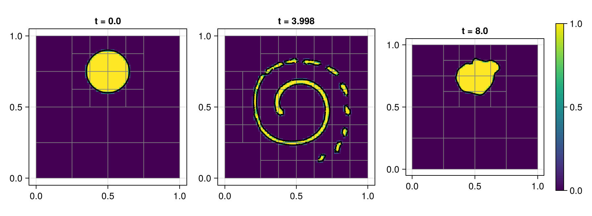
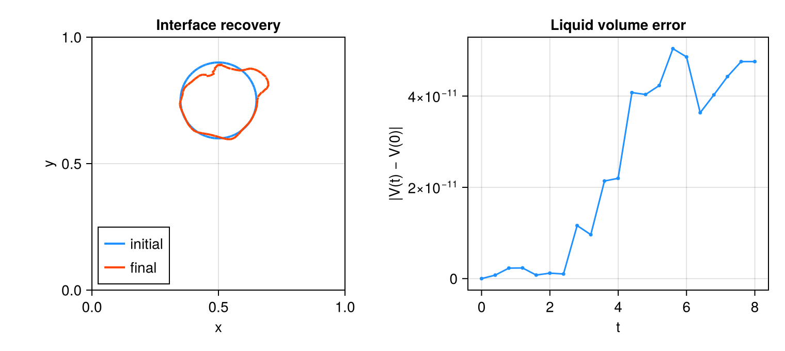

05 – Vortex reversal
A prescribed reversing vortex stretches a circular liquid patch and then returns it toward its initial shape.

At a glance
| Physics | Standalone liquid volume-of-fluid (VOF) transport in the periodic unit square; initial radius 0.15, centre (0.5, 0.75). The carrier velocity is prescribed, not solved; density, viscosity, gravity and surface tension are not parameters of this problem. |
| Algorithms | Weymouth–Yue geometric VOF advection with alternating sweep order and CFL 0.4; :lhf PLIC reconstruction with WY fallback. Interface and curvature refinement use minimum level 1 (clamped to max_level) and 8 cells per radius, with adaptation every 5 steps and coarsening delay 2; there is no pressure or diffusion solver. |
| Worth varying | max_level=5 controls the finest mesh; final_time=8.0 changes both the run duration and the reversal period; reconstruction_method=:lhf selects the PLIC normal method (:lhf_ghf and :wy are also supported); visualize=false leaves the live viewer off. |
| Validated against | The exact reversing flow returns to its initial shape and conserves liquid volume. At docs size abs(V(T)-V(0)) = 4.75607e-11; a geometric shape-error norm was not measured. |
| Cost | The default level-5 run is unmeasured. Docs: level 3, T=8, 1661 steps and 64 regrids; setup and simulation with the Cairo viewer took 71.13 s. Incremental generator compilation, including rendering, was 29.71 s in a shared single-thread process. An earlier headless audit reported 1792 final cells. |
Setup
The streamfunction and time-dependent carrier velocity are
\[\psi(x,y) = \frac{\sin^2(\pi x)\sin^2(\pi y)}{\pi},\qquad \mathbf u(x,y,t) = \cos(\pi t/T)(\partial_y\psi,-\partial_x\psi).\]
The velocity reverses at T/2 and its integrated displacement over T vanishes. The exact solution therefore returns to the initial circle, although discrete interface transport and AMR need not return it exactly. See the method reference for geometric VOF transport, PLIC reconstruction and AMR.
Run
From the repository root, in a Julia session started with --project=examples:
include("examples/05_vortex_reverse/vortex_reverse.jl")
run = run_example(max_level = 3, final_time = 8.0)
@show run.resultRun the interactive example or regenerate the headless Cairo assets:
julia --project=examples examples/05_vortex_reverse/vortex_reverse.jl
julia --project=examples -e 'include("examples/05_vortex_reverse/make_figures.jl"); make_figures()'make_figures(size=:default) uses the example's level-5 default. This example owns its VOF stepping loop rather than a FlowSimulation, so the figure script uses its existing visualization session with CairoMakie to capture the actual run; it does not activate GLMakie.
Results
The hero shows liquid fraction and reconstructed interface at the initial state, near maximum stretching, and the final state. Checkpoints are the nearest completed steps, so the printed times are the actual times.

The overlay compares the retained initial and final PLIC segments; the volume curve integrates the stored fractions over actual AMR cell areas. The final absolute volume error is 4.75607e-11; this is not a measurement of geometric shape recovery.
Variations
run_example(max_level = 2) # coarser AMR ceiling
run_example(max_level = 3, reconstruction_method = :wy)
run_example(max_level = 3, reconstruction_method = :lhf_ghf)Files
- vortex_reverse.jl – prescribed-flow example.
- make_figures.jl – retained snapshots and conservation plot.